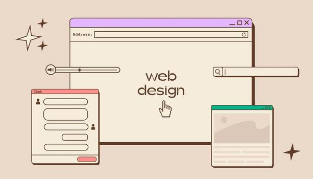
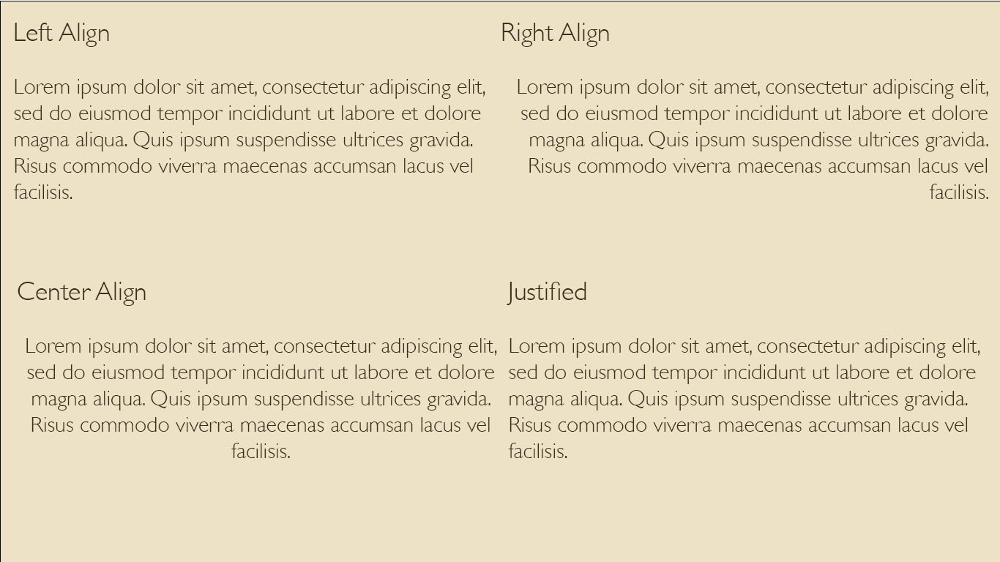

Picture from Google Images.
Go to Typography Go to Color and Design Principles Go to Hierarchy-Alignment Go to Visual Appeal-LegibilityThis webpage considers the factors of the visual aspects of typography and color and design principles.Explore the essential principles of effective web design. Learn how typography, color, layout, and visual hierarchy work together to create websites that are visually engaging, easy to navigate, and communicate ideas clearly. This guide breaks down the key elements of design and shows how thoughtful choices can transform a simple webpage into a compelling digital experience.
One of the most important aspects of design and typography is hierarchy. No matter what you’re designing, there needs to be a clear sense of hierarchy. If all type on a landing page is the same size then a potential customer would have no idea what to read first and will exit out immediately. By varying fonts, weights, size, and color you can begin to walk your user through finding all the information they’re looking for.
Image created by me.
For paragraph alignment, you can choose from left align, right align, center align, and justified. In general, right-aligned is rarely a good choice. Center aligned text can work with small amounts of copy or for a headline. But for the most part, you’ll want to left-align your body copy paragraphs.
Left-aligned text is easier on the eyes and best for legibility. We’re used to reading a page of words from left to right. Most books are either left-aligned or left-aligned justified. Justified text is more traditional, often used in newspapers and magazines. For justified text, you’ll need to adjust the tracking to compensate for the forced awkward spacing.

Image created by me.
When referring to visual appeal in web design, we're not talking about subjective color opinions. Instead, the emphasis is on creating harmonious color palettes that are easy on the eyes. Choosing colors that have broad visual appeal requires an understanding of color theory. As we'll discuss in more detail later on, there are three types of color schemes that have universal appeal: monochromatic, complementary, and analogous. Recognizing and knowing how to create these color schemes makes choosing colors for websites easier and more effective.
Color choice helps determine whether the content on a page is readable. Legibility is optimized with an appropriate level of color contrast between the text and the background. Too little contrast makes the text hard to read; too much contrast is hard on the eyes. A classic example of color contrast is black text on a white background. If you look closely, you'll notice that many websites actually use dark grey text on a white or off-white background in order to maximize legibility while minimizing eye strain.